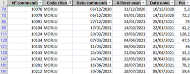
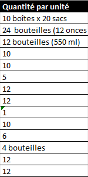
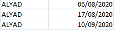
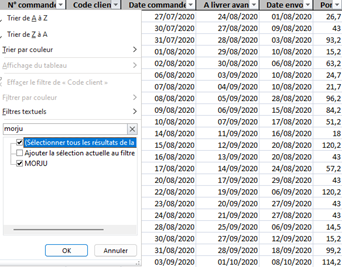

CONTEXTE
KDou a fait appel à l'équipe de Malak, Chirine, Sofiane et Zakaria pour l’aider à prendre en charge l’évolution de son positionnement et son organisation. Nous devions donc étudier et exploiter des données sur les clients, fournisseurs, commandes et articles. Pour cette mission les données étaient organisées dans un fichier Excel, ainsi que dans des annexes contenant des statistiques sur leurs fournisseurs et clients. Nous devions les interpréter pour ensuite proposer des solutions pour permettre à cette entreprise de se donner une image "éco-friendly".
BILAN
| Excel est très peu efficace pour le traitement de gros volumes de données. Il faut manipuler et compter les données à la main. |
 |
| Excel ne permet pas de faire des requêtes précises, les options sont limitées. Nous avons donc des requêtes irréalisables ou imprécises! |
 |
| Excel ne comporte de schéma relationnel, ce qui complexifie les interprétations de tables et réalisations de requêtes. |
 |
| La fonction de tri ne contient pas de choix multiples, nous laissant avec un volume de données trop volumineux. |
 |
CONCLUSION
Nous devrions tout d’abord quitter Excel, peu pratique et assez rigide comparé à Microsoft Access qui est assez intuitif et permet bien plus d’options / commandes pour manipuler les données. Un schéma relationnel permettrait une meilleure compréhension de la base de données dans son ensemble. Un code fournisseur pourrait être envisageable plutôt qu’un numéro. Le code contiendrait des lettres de la société et serait donc plus parlant lors d’une consultation de données. Uniformiser les types de conditionnements serait plus ergonomique pour potentiellement trier / scindé les produits qui devraient être stocker d’une façon particulière. Améliorer la génération des codes clients pour qu’ils reflètent mieux leur société. Rajouter les frais de ports dans les détails commandes semblent plus logique et intuitif pour y faire des calculs de chiffre d’affaire et/ou rajouter une colonne avec le montant total de la commande. Donnée très intéressante pour l’acheteur et la société. Corriger les fautes de typographie par exemple : Suède et Suéde qui faussent les résultats.